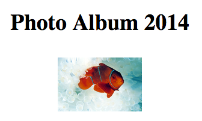

Date()By the end of today, you will be able to:
Date objects in different ways
The readings covered a lot of ground; let's take a minute to step back and see the big ideas:
As a concrete and useful example of objects, we'll start with date objects.
new Date()
getDay()
and getFullYear() to retrieve the data.
setDay()
and setFullYear() to modify the data.
Which of the following expressions does not involve an object method?
var d = new Date(); d.getTime()
var d = new Date(); d.setMonth(3)
var d = new Date(); alert(d)
(new Date()).toLocaleString()
In which of the following code excerpts, is there no object method involved? There might be more than one correct answer.
<button type="button" onclick="setColor();">set color</button>
var name = prompt("what is your name?"); alert("your name has "+name.length+" letters");
document.querySelector("#colorVal").innerHTML;
var e = 2.7182818; e.toFixed(2);
You are given the following HTML snippet:
<div id="album"> <h3>Photo Album 2014</h3> </div>which we would like to dynamically update with Javascript to display like this, adding an image to the album.

Which of the following statements will realize this?
var gallery = document.querySelector("#album");
gallery.innerHTML = "<img src='images/clownfish.jpg' alt='clownfish'>";
var imgEl = document.createElement("img");
imgEl.setAttribute("src", "images/clownfish.jpg");
imgEl.setAttribute("alt", "clownfish");
document.querySelector("#album").appendChild(imgEl);
var imgEl = document.querySelector("img");
imgEl.getAttribute("src") = "images/clownfish.jpg";
imgEl.getAttribute("alt") = "clownfish";
var imgEl = document.querySelector("#album");
imgEl.setAttribute("src") = "images/clownfish.jpg";
imgEl.setAttribute("alt") = "clownfish";
Note that the correct answer using jQuery is the following:
$("<img src='images/clownfish.jpg' alt='Clownfish'>").appendTo("#album");
(The examples in the notes were originaly written by someone for whom
English is not their first language, so forgive the persistent
mispelling of clownfish
; we'll root those all out eventually.)
Which of the following statements will not define a Date object?
var now = new Date();
var today = new Date(1415697698563);
var date = new Date("10/20/2014 03:45");
var aprilFool = new Date(2014, 15, 1);
All statements will define Date objects.
Choose the piece of code that will work correctly:
var now = new Date();
if (now.toLocaleDateString() == "03/18/2015") {alert("Spring Break begins!");}
var now = new Date();
if (now == "03/18/2015") {alert("Spring Break begins!");}
var now = new Date();
if (now.getDate() == 18 && now.getMonth() == 3) {alert("Spring break begins!");}
You're given the following three dates:
var start = "3/19/2015 00:00:01"; var end = "3/29/2015 23:59:59"; var today = "3/24/2015 11:30:00";
Which if the following statements correctly checks
that today during spring break?
if (start < today < end) {
alert("It's spring break.")
}
if (new Date(start) < new Date(today) < new Date(end)) {
alert("It's spring break.")
}
if (start < today && today < end) {
alert("It's spring break.")
}
if (new Date(start) < new Date(today) && new Date(today) < new Date(end)) {
alert("It's spring break.")
}
Write a simple program that prompts the user to enter a date, and then
displays a message if it is a Friday, the 13th. The Date object methods
.getDay() and .getDate() will be useful. Use
the execution box below to test it. Test dates: "2/13/2015",
"3/13/2015" and "4/13/2015".
Write a simple program that prompts the user to enter their birthday and displays a message with the day of their birthdate. For example, if someone was born on May 5th, 2005, they'll see the message "You were born on a Thursday."
Most likely, the code you wrote for Exercise 2 contained a long cascading of if, else if statements, one for every day of the week. That is fine, but it's a lot of typing. Often programmers have fun trying to find solutions that are short to write. Thus, here is a challenge for you. Assume you are given an object like this:
var dayNames = {Sun: "Sunday", Mon: "Monday", Tue: "Tuesday", Wed: "Wednesday",
Thu: "Thursday", Fri: "Friday", Sat: "Saturday"}
Using the .toDateString() method, the string method .slice(),
and the object dayNames find the day name with a single line of code.
Documentation for .toDateString().
In the Arrays lecture on Thursday, we'll see another way of finding weekday names using array indexing.
You're writing a website that will have a splash page that depends on the season. If the current day falls in Autumn, the page has a Autumn theme, if it falls in Spring a Spring theme, and so on. You can see our screencast to get an idea.
From the cs110dl account, download the seasons folder
and spend a few minutes looking at the HTML and CSS files.
To save time in class, instead of downloading the folder we'll use jsFiddle. Here is the link. We have already added the HTML, CSS, and some Javascript.
Given that we know the starting time for each season in 2015, write a few lines of code (in the JavaScript section of the JSfiddle) that checks if the current date is in the Winter and alerts "It's Winter".
In jsFiddle, add your code in the Javascript pane.var springStart = "2015/3/20 6:45 PM"; var summerStart = "2015/06/21 12:38 PM"; var autumnStart = "2015/09/23 04:21 AM"; var winterStart = "2015/12/21 11:48 PM";
Use the constructor new Date() with a string value,
e.g. "5/5/2015", and extend your code to alert that it's spring.
Now that the logic for decision making is working, extend your Javascript code to do the following:
season to store the name of the season within
each THEN branch.document.querySelector() with the appropriate
selector to write the season name within the H2 tag. Be careful!
You'll need a descendant selector. Or you can add an ID to the H2
tagDate to write
the date as "Month/Day/Year" in the appropriate element of the
page. Again, use a descendant selector.Once you completed this, the results looks like this:
In the CSS part of the JSfiddle complete the rule for the season
DIV elements, so that we don't see all text items at the
same time.
#spring, #summer, #autumn, #winter {
/* add CSS here */
}
Add some Javascript that will make only the season's poem of the day show on the page.
While we can add code in the conditional statements, a more modular way is to
do this at the very end. Assuming that you have used a variable season
to store strings like "Summer" or "Winter", we
can use the string method .toLowerCase() like below:
var seasonID = "#" + season.toLowerCase();
to create the corresponding ID values such as #spring.
Finally, to which element you'll need to add one of the classes springStyle,
autumnStyle, etc., in order to have the corresponding
season style show on the page. We have used the
method .addClass() in the past for this purpose. That
method allows you to add a class to the list of classes for an
element, so that an element can have several classes at a time. We
don't want this. Thus, instead of the .addClass() method,
we'll use the className property. Try it out
To test that the page works well for all seasons, use four test dates
(one at a time), with the new Date() constructor, so that
you test all four seasons.
This is what we did in our seasons screencast.
We hope you had fun with the object Date. As you can see from the today exercises
and the Seasons app, this object and its methods allow us to write some
pretty cool webpages, that can be used to personalize the user experience. You should
feel confident in these skills: